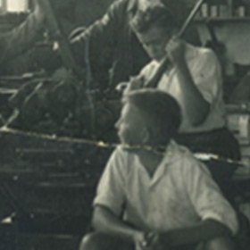
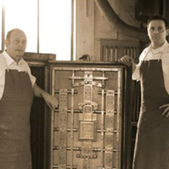
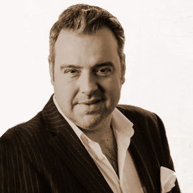

Ernst Döttling lays the cornerstone for the company’s success by founding the Döttling locksmith shop in Sindelfingen.

1945
From 1945 to 1977, the next generation, personified by Willy Döttling, carries on the successful business.
1977
In the third generation, Wolfgang Döttling takes over the company. He constantly supported the manufactory until last with advice and a great deal of experience.
1997
Markus Döttling enters his father’s business with great enthusiasm and many new ideas.

2010
Andreas K. Schlittenhardt takes over the majority of the Döttling shares and joins the company as the new managing director.

2019
The internationally operating SWJ Group acquires the companies assets and leads on the business with the Döttling Luxury Safes GmbH. An important setting in the continuation of a successful and prosperous future for Döttling. Stefan Hartman is appointed new managing director. Andreas K. Schlittenhardt stays actively and long-term orientated at his side as brand ambassador and executive consultant.